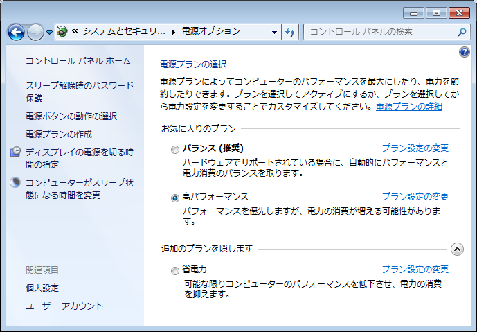
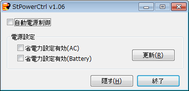
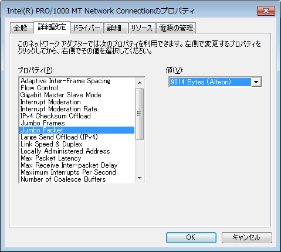
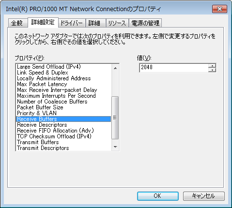
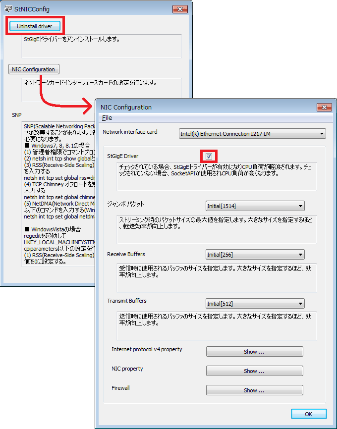
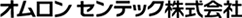

|
Sentech SDK C
|
カメラのインターフェース(USB3Vision/GigEVision/CoaXPress)間の相違点について説明します。
Windows 7以前のOS用のUSB 3.0 ホストコントローラードライバーは、ボードメーカーまたはチップメーカーから提供されています。ドライバーのバージョンが古い場合、正常に動作しないことがありますので、ご注意ください。弊社で把握している各ベンダーの最新のバージョンは以下の通りです。最新のドライバーの入手方法につきましては、お手持ちのボードまたはパソコンのメーカーにお問い合わせください。また、パソコンによって最新のBIOSへのアップデートが必要になる場合があります。
| Vendor | Chip | Firmware | Driver | 入手元 |
|---|---|---|---|---|
| Intel | Intel 7 Series | - | 1.0.10.255 | %CommonProgramFiles%\OMRON_SENTECH\Driver\USBHost\Intel |
| Intel | Intel 8/9/100/200 Series | - | 5.0.4.43 v2 | %CommonProgramFiles%\OMRON_SENTECH\Driver\USBHost\Intel |
| Renesas | uPD720200 | 3.0.3.4 | 2.1.39.0 | ボードメーカー |
| Renesas | uPD720201,2 | 2.0.2.6 | 3.0.23.0 | ボードメーカー |
| Fresco | FL1000,1009,1100 | - | 3.8.35514.0 | Fresco社WEBサイト または本SDK(%CommonProgramFiles%\OMRON_SENTECH\Driver\USBHost\Fresco) |
CPUの省電力モードが有効になっていると、USBバスの実効帯域が低下し、フレームドロップが発生することがあります。 [コントロールパネル][システムとセキュリティ][電源オプション]で「高パフォーマンス」を選択することで改善することがあります。

環境によっては付属のツール「StPowerCtrl.exe」を使用し、省電力モードの無効化が必要な場合もあります。

USBサブシステムに割り当てられるメモリの上限を設定するために、${STAPI_ROOT_PATH}/bin/setusb.shスクリプトを実行してください（パソコンが再起動されるまで効果があります）。 Linuxのブートスクリプトのカーネルパラメターにusbcore.usbfs_memory_mb=0を追加した場合は、setusb.shを実行する必要はありません。
V4L2ドライバーをインストールしている場合は、このソフトウエアを利用する際にV4L2ドライバーのアンインストールもしくはドライバモジュールのメモリーからのアンロード（$ sudo rmmod stcam_dd）が必要となります。
USB3Visionカメラでは、カメラから出力されるPayloadData(画像データおよびチャンクデータ)に対して連番でBlockIDが割り当てられます。帯域不足などによりカメラ側で破棄されたフレームに対しては、BlockIDが割り当てられませんので、アプリケーション側でBlockIDの抜けを検出しても、フレームドロップを検出することはできません。BlockIDは、 StApi::IStStreamBufferInfo::GetFrameID() で取得できます。
UserDefinedNameを設定することでユーザーがカメラに名前を付けることができますが、UserDefinedNameにASCII文字列以外を入力した場合、USBのDescriptorから文字列が取得できなくなるため、下記の制限が生じます。
USB3Visionでは下記の機能は動作しません。
使用されるネットワーク機器がジャンボパケットに対応している場合は、ジャンボパケット設定を行うことで転送効率が改善します。ジャンボパケット設定はホスト側およびカメラ側で行う必要があります。ホスト側の設定はデバイスマネージャーからネットワークアダプターのプロパティを開き、下記のような設定画面で行います(Windows Vista以降のOSでは、本SDK付属のStNICConfigツールからも設定可能)。ジャンボパケットは手動での設定が必要となりますので、ご注意ください。

Receive Buffersを増加させることで転送が安定する場合があります。Receive Buffersの設定はデバイスマネージャーからネットワークアダプターのプロパティを開き、下記のような設定画面で行います(Windows Vista以降のOSでは、本SDK付属のStNICConfigツールからも設定可能)。

Windows Vista以降のOSでは、StGigE Driverを使用することで、CPU負荷を軽減できます。本SDK付属のStNICConfigツールによりStGigE Driverのインストールおよび有効無効切り替えが可能です。StGigE Driverはインストール時に自動的に有効になっていますので、手動で設定する必要はありません。ただし、GigEVisionカメラを使用しないカードに対しては、StGigE Driverを無効に設定した方がCPU負荷が軽減されます。

使用されるネットワーク機器がジャンボフレームに対応している場合は、MTU設定とソケットバッファサイズ設定を行うことで転送効率が改善します。また、Linux上でGigEカメラのIPとネットワークインタフェースカードのネットワークが異なる場合、GigEカメラの認識が出来ないことがあります。その場合は戻り経路フィルタの設定が必要となります。ネットワーク設定を行うために下記のスクリプトを実行してください。
OSやセキュリティソフトなどのファイアウォールが有効になっているとカメラからのパケットが受け取れず、「カメラが発見できない」、「画像データを取得できない」といった問題が発生することがあります。その場合には、ファイアウォールを無効にするか、使用されるアプリケーションを例外に登録してご使用ください。
StApi::IStStreamBufferInfo::GetFrameID() を使用することで64ビットのBlockIDを受け取ることができます。カメラから送られてくる32ビットのBlockIDは0xFFFFFFFFに達すると次のBlockIDは0x000000001になりますが、 StApi::IStStreamBufferInfo::GetFrameID() では64ビット化された連続した値が取得されます。
アプリケーションがGigEVisionカメラをコントロールモードまたは排他モードで開くと、アプリケーションはカメラに対して排他的なアクセス権を獲得します。アプリケーションがアクセス権を保持したまま終了した際に、他のアプリケーションがカメラへアクセスできなくなってしまうのを防ぐため、アプリケーションからコマンドを受け取らない期間がDeviceLinkHeartbeatTimeout[us単位](またはGevHeartbeatTimeout[ms単位])を超えると、カメラはアクセス権をはく奪します。GigEVisionカメラがコントロールモードまたは排他モードで開かれた場合、GenTLモジュールはアクセス権を維持するために定期的にカメラへコマンドを送信しています。 デバッガー等でアプリケーションの実行を停止した場合、この定期的なコマンド送信も停止してしまうため、カメラのアクセス権が失われ、実行を再開した際に、カメラをコントロールできなくなることがあります。 GenTLモジュールはGigEVisionカメラオープン時にデバッガーを検出すると、自動的にカメラのDeviceLinkHeartbeatTimeout[us単位](またはGevHeartbeatTimeout[ms単位])を300,000[ms]に設定します。また、環境変数「STGENTL_GIGE_HEARTBEAT」[ms単位]でタイムアウト時間が指定されている場合は、デバッガの有無にかかわらず、その値をカメラへ設定します。GenTLモジュールでは、この設定値の1/3の間隔(300,000[ms]に設定されている場合は、100[s]ごと)でアクセス権を維持するためのカメラへコマンドが送信されます。
GigEVisionカメラが正常に閉じられた場合は、タイムアウト時間の設定が元に戻され、アクセス権も破棄されます。アプリケーションが異常終了するなどした場合、タイムアウト時間が経過するか、カメラの電源ケーブルもしくはネットワークケーブルを抜き差しするなどしてカメラをリセットするまで、カメラへアクセスできなくなりますのでご注意ください。
弊社の古いGigEVisionカメラシリーズで対応していたSFNC非準拠のガンマテーブル設定の機能には本SDKは対応していません。
CoaXPressではサードパーティー製のGenTLモジュールを使用します。対応しているGenTL仕様のバージョン等により、一部の機能が正常に動作しない場合があります。ボードメーカーから最新のドライバを入手してください。
StApi::IStDeviceInfo::GetAccessStatus() で取得される GenTL::DEVICE_ACCESS_STATUS の値が使用するボードのメーカーやバージョンによって、USB3Vision/GigEVisionの値とは異なることがあります。
